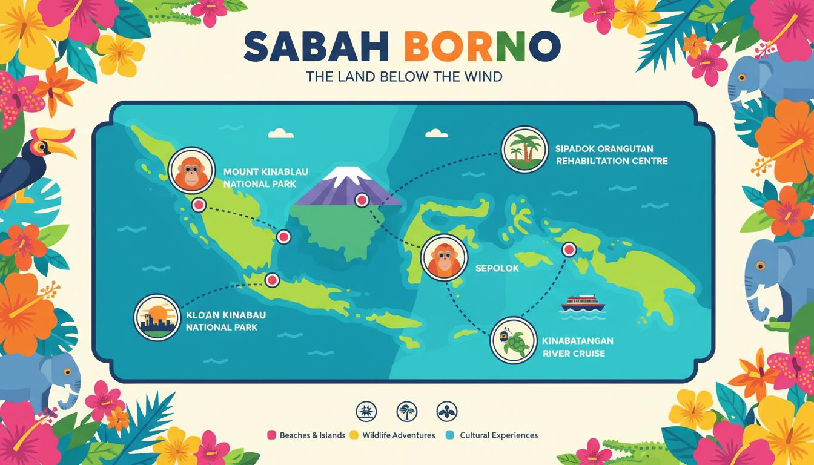

Complete Travel Guide
Everything you need to know to plan an unforgettable trip to Sabah, from when to visit and what to pack to how to get around and where to stay.
Quick Jump to:
Best Time to Visit Sabah
Sabah enjoys a tropical climate with temperatures ranging from 23°C to 33°C year-round. While the state lies outside the typhoon belt, there are distinct wet and dry seasons to consider when planning your trip.
| Season | Months | Weather | Pros | Cons |
|---|---|---|---|---|
| High Season | March - May | Dry, sunny, 25-32°C | Best diving, climbing conditions | Higher prices, more crowds |
| Shoulder Season | June - August | Generally dry, occasional rain | Good weather, fewer tourists | Some haze possible |
| Low Season | September - February | Wet season, 23-30°C | Lowest prices, lush landscapes | Heavy rain, rough seas |
| Festival Season | May, August, December | Variable | Cultural experiences | Need advance booking |
Our Recommendation
The months of March to May offer the best overall conditions for most activities. However, diving at Sipadan is excellent year-round, and wildlife viewing at Sepilok is consistent throughout the year.
Getting to Sabah

By Air
The main gateway to Sabah is Kota Kinabalu International Airport (BKI), Malaysia's second busiest airport. Direct flights connect KK to major Asian cities including Kuala Lumpur, Singapore, Hong Kong, Seoul, Tokyo, Manila, and Taipei.
For destinations on Sabah's east coast, such as Sandakan (for Sepilok) and Tawau (for Sipadan), domestic flights operate regularly from KK. AirAsia and Malaysia Airlines provide extensive coverage within Sabah.
Visa Requirements
- ASEAN Citizens: Visa-free entry (up to 30 days for most)
- EU/US/UK/AU/NZ/JP: Visa-free entry for 90 days
- Other Nationalities: Check with Malaysian embassy for requirements
- Passport Validity: Minimum 6 months beyond arrival date
- Return Ticket: May be requested at immigration
Getting Around Sabah
| Transport | Best For | Cost Range (MYR) | Notes |
|---|---|---|---|
| Domestic Flights | Long distances (KK to Sandakan/Tawau) | 100 - 400 | Fastest option, book early |
| Rental Car | Flexible exploration | 150 - 350/day | Right-hand drive roads |
| Bus/Minivan | Budget travel | 20 - 100 | Longer travel times |
| Taxi/Grab | City transport | 10 - 50/trip | Grab app widely used in KK |
| Boat/Ferry | Island access | 30 - 200 | Essential for TARP islands |
| Tour Packages | Remote destinations | 200 - 1,000+ | Includes guide and transport |
Where to Stay
🏨 Luxury Resorts
High-end beachfront resorts and jungle lodges with world-class amenities. Expect to pay MYR 500-2,000+ per night.
- Shangri-La Rasa Ria
- Gaya Island Resort
- Sutera Harbour Resort
🏠 Mid-Range Hotels
Comfortable hotels and boutique guesthouses with good facilities. Prices range from MYR 150-500 per night.
- Hyatt Regency Kinabalu
- Hotel Sixty3
- Nexus Resort Karambunai
🏕️ Budget & Hostels
Backpacker hostels, homestays, and budget hotels. Great value at MYR 30-150 per night.
- Hostel lodges in KK city center
- Homestays in villages
- Basic mountain huts
What to Pack
Essential Packing List
- Lightweight, breathable clothing - Cotton and moisture-wicking fabrics
- Rain jacket/poncho - Tropical downpours happen year-round
- Comfortable walking shoes - Plus sandals for beach
- Insect repellent (DEET) - Essential for jungle areas
- Sunscreen (SPF 30+) - Strong tropical sun
- Swimwear - Multiple sets for water activities
- Reusable water bottle - Stay hydrated, reduce plastic
- Power adapter - Malaysia uses UK-style 3-pin plugs (Type G)
- Basic first aid kit - Include anti-diarrheal medication
- Universal travel adapter - 240V, 50Hz electricity
For Mountain Climbers
If climbing Mount Kinabalu, additional gear includes: warm layers (temperatures below freezing at summit), hiking boots with good grip, headlamp with extra batteries, trekking poles, and a small backpack.
Budget Planning
| Expense Category | Budget (MYR) | Mid-Range (MYR) | Luxury (MYR) |
|---|---|---|---|
| Accommodation (per night) | 30 - 100 | 150 - 400 | 500 - 2,000+ |
| Meals (per day) | 30 - 60 | 80 - 150 | 200 - 500 |
| Local Transport (per day) | 20 - 50 | 60 - 120 | 150 - 400 |
| Activities/Attractions | 50 - 150 | 200 - 500 | 600 - 2,000+ |
| Daily Total (approx.) | 130 - 360 | 490 - 1,170 | 1,450 - 4,900+ |
Money-Saving Tips
- Eat at local hawker centers and night markets for authentic, affordable meals
- Book accommodation and tours directly with local operators
- Travel during shoulder season for better rates
- Use Grab instead of taxis for cheaper city transport
- Book Mount Kinabalu climbs well in advance to avoid surcharges
Safety & Health

Staying Safe in Sabah
Sabah is generally a safe destination for travelers. Violent crime is rare, and locals are famously friendly and welcoming. However, as with any travel destination, it's wise to take standard precautions:
- Keep valuables secure and be aware in crowded areas
- Use hotel safes for passports and extra cash
- Avoid isolated beaches at night
- Follow local advice regarding sea conditions
- Register with your embassy if traveling to remote areas
- Get comprehensive travel insurance before departure
Health Precautions
- No mandatory vaccinations, but Hepatitis A/B, Typhoid, and Tetanus recommended
- Malaria is present in remote jungle areas - consult doctor about prophylaxis
- Dengue fever is present - use mosquito repellent diligently
- Drink only bottled or boiled water
- Comprehensive travel insurance with medical evacuation coverage is essential
Cultural Etiquette
Respecting Local Customs
- Dress modestly when visiting religious sites and rural villages
- Remove shoes before entering homes and places of worship
- Use right hand for giving and receiving items (left hand is considered unclean)
- Ask permission before photographing people
- Respect elders - greet them first and offer your seat when appropriate
- During Ramadan - avoid eating, drinking, or smoking in public during fasting hours
- Greetings - a smile and slight nod work universally; "Selamat datang" means welcome
Emergency Contacts
| Service | Number |
|---|---|
| Police / General Emergency | 999 |
| Tourist Police | +60 88-450 222 |
| KK Hospital | +60 88-517 555 |
| Fire & Rescue | 994 |
| Malaysia Tourism Hotline | 1-300-88-5050 |
Need Personalized Travel Advice?
Our team is ready to help you plan the perfect Sabah adventure tailored to your interests and budget.
Contact Us